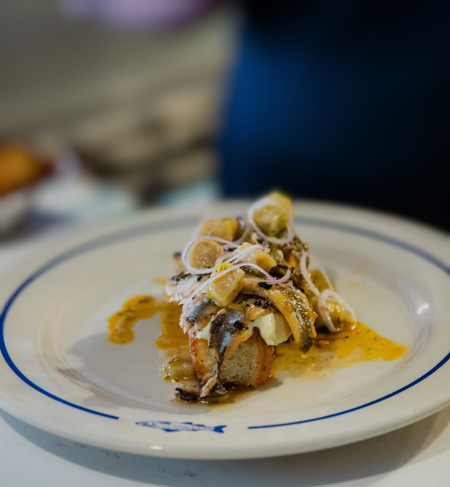

Creativity in a kitchen isn't the same thing as novelty for its own sake. The most inventive restaurants in Ottawa aren't chasing shock value — they're following an idea further than most kitchens are willing to, whether that means a menu that never repeats, a plate built entirely from what's been fermenting in the back for months, or a familiar dish taken apart and rebuilt from scratch.
The five restaurants below share a refusal to settle for the expected version of anything. Some express that through constant reinvention, others through a singular obsession pursued relentlessly. What they have in common is a kitchen willing to take a genuine risk on an idea, rather than simply executing a known formula well.
Creativity built one jar at a time
Antheia's creativity doesn't show up as a flourish on the plate — it happens months earlier, in a fermentation programme that shapes literally everything the kitchen serves. Chef Briana Kim treats preservation itself as the creative act, coaxing entirely new flavours out of ingredients through processes that take patience most restaurants don't have time for.
By the time a dish reaches the table, it's already the product of an idea that's been quietly evolving for weeks — which is a very different, and arguably more disciplined, kind of inventiveness.
A menu that refuses to hold still
Most restaurants build a reputation on consistency — the same excellent dish, night after night. Atelier has built its reputation on the opposite instinct. Chef Marc Lepine's tasting menu is in a permanent state of revision, which means creativity here isn't a seasonal refresh, it's the entire operating model.
The result is a kitchen that treats each course as a small, self-contained experiment — often playful, occasionally strange, and rarely anything a guest could have predicted walking in the door.
Classic French technique, reassembled with intent
Gitanes takes a different approach to originality — rather than inventing from a blank page, the kitchen picks apart classic French technique and puts it back together with its own sense of proportion and surprise. The results still read as French, but rarely as anything you've had before.
It's a subtler form of creativity than reinvention for its own sake, and one that rewards guests who already know the tradition well enough to notice exactly where it's been bent.
Seafood pushed past the expected
Seafood restaurants tend to let the ingredient speak for itself and stop there. Le Poisson Bleu treats that as a starting point rather than a rule, building plates around unexpected pairings and techniques that ask more of the kitchen — and of the diner — than a straightforward preparation would.
It's a neighbourhood bistro with genuinely ambitious ideas running underneath the casual surface, which is exactly the kind of contrast that makes a restaurant worth paying attention to.
Bold pairings with a neighbourhood ease
Fauna's creativity comes through in its willingness to put flavours together that shouldn't obviously work, and somehow make it feel effortless rather than forced. There's a confidence to the pairings here that only comes from a kitchen that has tested an idea enough times to trust it completely.
What keeps it from feeling like a stunt is the room itself — warm, unpretentious, and entirely uninterested in making the ambition on the plate feel like the point of the evening.
Five kitchens, five different definitions of what it means to be original — proof that creativity in Ottawa's dining scene looks nothing like a single formula.